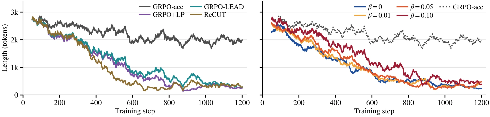

Beyond Penalizing Mistakes: Stabilizing Efficiency Training in Large Reasoning Models via Adaptive Correct-Only Rewards
arXiv preprint
1Korea University 2Soongsil University
*Equal contribution †Corresponding authors
![Overview of ACOER. Top row, the GRPO loop: a prompt x goes to the policy, which samples completions y1 to yG, drawn as green bars for correct and red bars for incorrect ones. The highlighted reward box feeds a group-relative advantage and a policy update, which returns to the policy. The reward box opens into three panels. Panel 1, correct-only signal: the reward of a correct completion falls with its length and flattens at a dot, while incorrect completions lie on a flat red line with no length term. The formulas read r(y) = 1 + alpha_t g(min{l/B_t, 1}) in green and r(y) = 0 in red. Panel 2, adaptive budget: the point where the reward curve flattens moves left from its earlier, dashed position to the budget B_t, which follows the EMA of correct lengths, drawn falling over training steps. Panel 3, control-loop bonus: the weight alpha_t sets the height of the reward curve above its earlier, dashed state, and a plot of alpha_t over training steps rises, drops where the accuracy change is at most minus delta, and rises again.](assets/overview.webp)
Abstract
Reasoning models spend many tokens on problems that need far fewer, and a length term in the reward of group relative policy optimization (GRPO) is a natural remedy. However, such rewards often end in reward collapse, where outputs shrink until accuracy falls. To find out why, we analyze GRPO's group normalization. Whenever a prompt's completions share one outcome, the normalization stretches even a very small length term into a full-strength learning signal. Experiments on a 1.7B reasoning model are consistent with this: with a fixed bonus for correct completions, penalizing short incorrect completions does not prevent collapse at any tested weight, and dropping the penalty is not enough, since the bonus alone compresses outputs. Building on this diagnosis, we propose ACOER (Adaptive Correct-Only Efficiency Reward), which pays a length bonus only for correct completions, sets the budget from the policy's own correct outputs, and adapts the bonus weight to the accuracy trend. ACOER trains stably where the length-reward baselines collapse, cutting the tokens generated on MATH-500 by more than half at accuracy on par with the base model. Code is available at https://
Reward Design Space and Experimental Setup
Length rewards are compared in one form, a generalized reward that treats correct and incorrect completions separately:
\[\begin{aligned} r &= c + c \cdot \alpha \cdot f(\ell) \\ &\quad - (1 - c) \cdot \beta \cdot f(\ell) + r_{\text{format}} \end{aligned}\]
Here \(c \in \{0, 1\}\) indicates whether the final answer is correct, \(\ell\) is the number of generated reasoning tokens, and \(f(\ell) = 1 - \ell/L\) decays linearly up to the maximum token limit \(L\). The weight \(\alpha \geq 0\) scales the length bonus reserved for correct answers, and \(\beta \geq 0\) scales a penalty on incorrect answers that is largest for the shortest ones. The format reward \(r_{\text{format}}\) equals 1 when the completion contains valid <think> and \boxed{} tags and 0 otherwise. Setting \(\beta = 0\) yields a correct-only reward, whereas \(\beta > 0\) puts a length signal on both outcomes.
The table lists the reward of each baseline and ablation, grouped by whether the length signal, if any, acts only on correct answers or on incorrect answers as well. GRPO-acc is the reference without any length signal and rewards correctness alone. GRPO-LEAD applies its length term to correct answers only: a correct completion earns a reward that decays with its length, and an incorrect one a fixed penalty. GRPO+LP subtracts a penalty proportional to the length from every completion, and ReCUT gives an output of \(|Y|\) tokens a reward of \(1/|Y|\) if it is correct and \(-1/|Y|\) if it is not, so both also act on incorrect answers.
| Method | Reward \(r\) |
|---|---|
| Correct-only | |
| GRPO-acc | \(c\) |
| \(\beta = 0\) | \(c + 0.3\,c\,(1 - \ell/L)\) |
| GRPO-LEAD | \(e^{-\ell/L}\) if correct, \(-1\) if incorrect |
| Length signal on incorrect answers | |
| \(\beta > 0\) | \(c + 0.3\,c\,(1 - \ell/L) - \beta\,(1 - c)(1 - \ell/L)\) |
| GRPO+LP | \(c - 0.3\,\ell/L\) |
| ReCUT | \(1/|Y|\) if correct, \(-1/|Y|\) if incorrect |
Scroll sideways to see every column.
Reward of each baseline and ablation as implemented here, with the format reward omitted. \(L\) is the maximum token limit, \(|Y|\) the number of output tokens, \(\beta \in \{0.01, 0.05, 0.10\}\), acc denotes accuracy only, and LP denotes length penalty.
All configurations are trained under identical conditions and differ only in their reward. Qwen3-1.7B, a reasoning model that writes its reasoning between <think> and </think> tags, is trained with GRPO and low-rank adaptation on the training splits of MATH and GSM8K, which together contain 14,973 English mathematical problems. For each prompt, the policy samples \(G = 16\) completions of at most 8,192 tokens, and every run lasts 1,200 steps. The primary benchmark is MATH-500, and three harder benchmarks test transfer: MATH-Hard, AIME 2025, and OlympiadBench. At evaluation, generation is limited to 16,384 new tokens, twice the training limit, and the mean number of generated tokens counts both the reasoning and the final response.
Diagnosing Reward Collapse
A run is called collapsed when its MATH-500 accuracy drops by more than five points between two consecutive evaluations, taken every 200 training steps, and never returns to within five points of the level before the drop. The first such evaluation marks the collapse onset, and a run that never meets this condition is called stable.
The sweep varies the incorrect-answer weight over \(\beta = 0\), \(0.01\), \(0.05\), and \(0.10\), with the correct-answer bonus fixed at \(\alpha = 0.3\). Every run with \(\beta > 0\) collapses, from the smallest weight, thirty times below \(\alpha\), to the largest. Penalizing short incorrect answers therefore does not prevent collapse at any tested weight.
![Two line charts over training steps 200 to 1,200 for beta = 0 with seeds 42 and 43, beta = 0.01, beta = 0.05 and beta = 0.10, with a dotted line for the base model. Left, MATH-500 accuracy: all runs start between about 86 and 89 percent. The beta = 0, seed 42 run stays between about 84 and 89 percent, while the other four runs drop to between about 56 and 68 percent, with rings at their collapse onsets: step 600 for seed 43 and beta = 0.01, step 800 for beta = 0.05 and step 1,000 for beta = 0.10. Right, mean generated tokens: the base model is at about 5.5K, all runs start between about 4.7K and 5.1K and decline, to about 2.3K for beta = 0, seed 42 and to between about 0.6K and 1.5K for the others.](assets/sweep.webp)
The completions sampled during training shrink in the length-reward baselines and in the four sweep runs shown. The mean length of these completions, averaged over windows of 50 steps, falls from between 2,300 and 2,800 tokens at step 100 to between 200 and 500 tokens at step 1,200, whereas GRPO-acc ends near 2,000 tokens. In the sweep, the decline begins within the first few hundred steps for every \(\beta\), including \(\beta = 0\), well before the MATH-500 accuracy drops.


Setting \(\beta = 0\) does not remove the problem. One seed collapses at step 600 although its reward contains no length term on incorrect completions. The other does not collapse within 1,200 steps and cuts the tokens on MATH-500 by more than half, yet it ends below the base model on all four benchmarks, by 20.0 points on AIME 2025 and 22.1 on OlympiadBench, a loss about as large as in the collapsed runs. A correct-only reward with a fixed bonus therefore does not guarantee stability.
Why a Small Length Term Can Matter
GRPO samples a group of \(G\) completions for a prompt and computes the advantage of each completion from the group-normalized rewards:
\[\hat{A}_i = \frac{r_i - \text{mean}(\{r_j\}_{j=1}^G)}{\text{std}(\{r_j\}_{j=1}^G)}\]
Consider a prompt whose sampled completions all have the same correctness and the same format validity, so that \(c\) and \(r_{\text{format}}\) are constant within the group. The generalized reward then reduces to \(r_i = a + w\,f(\ell_i)\), where \(a\) collects the constant terms, \(w = \alpha\) if all completions are correct, and \(w = -\beta\) if all are incorrect. The length term is now the only source of variation in the group, and the normalization removes its scale.
Scale invariance within a group of equal outcomes
Let \(r_i = a + w\,f(\ell_i)\) for \(i = 1, \ldots, G\) with \(w \neq 0\), and let the values \(f(\ell_i)\) not all be equal. Then
\[\hat{A}_i = \mathrm{sign}(w)\,\frac{f(\ell_i) - \bar{f}}{s_f}\]
where \(\bar{f}\) and \(s_f\) are the mean and the standard deviation of \(f(\ell_1), \ldots, f(\ell_G)\). In particular, \(\hat{A}_i\) does not depend on \(|w|\).
As an illustration, consider a group of four correct completions with 1,000, 2,000, 3,000, and 4,000 tokens and \(L = 8{,}192\), and let the denominator be the sample standard deviation plus \(10^{-4}\) as in TRL. A weight of \(w = 0.3\), the value of \(\alpha\) in the sweep, gives the advantages +1.16, +0.39, −0.39, and −1.16. A weight of \(w = 0.01\) makes the reward differences thirty times smaller, yet leaves the advantages almost unchanged at +1.09, +0.36, −0.36, and −1.09. A weight of exactly zero silences the group, because all rewards are then equal and the group contributes no policy gradient.
Length terms on incorrect completions
When all completions of a prompt are incorrect and equally well formatted, a reward without a length term is constant and the group is ignored. With \(\beta > 0\), the same group instead delivers advantages as large as in any other group, and they carry no information about correctness, even for a very small \(\beta\).
Such groups arise on hard prompts, and the form of the term sets the direction of their gradient. The penalties of the generalized reward and of ReCUT are largest for short incorrect completions and push the policy toward longer outputs on these prompts, whereas the penalty of GRPO+LP grows with length and pushes it toward shorter ones. In either direction, the policy moves along the length term without any check from accuracy.
Compression of correct answers
The same argument applies to prompts whose completions are all correct. Such prompts arise on easy problems, and they become more frequent as the policy improves. In these groups the bonus \(\alpha f(\ell)\) is the only varying term, and a correct-only reward still delivers a full-strength push toward shorter answers.
Nothing in the group signals when answers become too short, and the compression can continue until accuracy drops on harder prompts. The bonus is shared by every run of the sweep and is the only length term of the generalized reward that rewards shorter outputs. This is consistent with the shrinking training lengths of every sweep run and with the collapse of one \(\beta = 0\) seed.
Suppose the policy solves a prompt with probability \(p\) and its \(G = 16\) samples are independent. For \(p = 0.95\) an entirely correct group occurs with probability \(0.95^{16} \approx 0.44\), for \(p = 0.9\) with probability \(0.9^{16} \approx 0.19\), and a prompt solved with probability 0.05 or 0.1 yields entirely incorrect groups with the same probabilities. Because prompts differ in difficulty, such groups can be frequent even when the average accuracy is moderate.
Both pathways call for design choices beyond tuning a fixed weight. With the standard normalization kept, a reward should carry no length term for incorrect completions, and its bonus for correct completions should stay tied to the current lengths of the policy and to its accuracy.
ACOER: Adaptive Correct-Only Efficiency Reward
ACOER changes only the reward in the GRPO loop and meets these requirements with three mechanisms. At optimization step \(t\), the reward of a completion \(y\) with \(\ell\) reasoning tokens is
\[r(y) = c\,\bigl(1 + \alpha_t\, g(\min\{\ell / B_t,\, 1\})\bigr) + r_{\text{format}}\]
where \(c\) indicates correctness, and \(g(x) = \log(1 + k(1 - x)) / \log(1 + k)\) with \(k = 5\) falls from 1 at \(x = 0\) to 0 at \(x = 1\) and flattens for very short answers, so that further shortening earns a diminishing reward. The absence of a length term for incorrect completions, the budget \(B_t\), and the weight \(\alpha_t\) correspond to the three mechanisms.
-
Mechanism 1
Correct-only signal
A correct-only signal pays a length bonus only for correct completions, and groups of incorrect completions are again ignored.
ACOER sets \(\beta = 0\), so incorrect completions carry no length term. A group in which all completions are incorrect and equally well formatted then has constant rewards and no policy gradient, which removes Pathway 1 and keeps the length bonus for correct solutions.
-
Mechanism 2
Adaptive budget
With the fixed limit \(L\), two short completions differ in \(f(\ell)\) by only \(\Delta\ell / L\). ACOER instead measures length against a budget
\[B_t = \max(B_{\min},\, \gamma \cdot \text{EMA}_t)\]
where \(\text{EMA}_t\) is an exponential moving average of the lengths of correct completions, \(\gamma = 0.85\), and the floor \(B_{\min}\) is 512 tokens. A completion is thus rewarded for being shorter than the recent correct answers of the policy itself.
-
Mechanism 3
Control-loop bonus
In groups that mix correct and incorrect completions, a bonus that is too strong trades accuracy for brevity. A control loop therefore adapts \(\alpha_t\) to the accuracy trend:
\[\begin{aligned} \alpha_{t+1} &= \min\bigl(\alpha_{\max},\\ &\qquad \max(\alpha_{\min},\, m_t\,\alpha_t)\bigr) \end{aligned}\]
where \(m_t\) is \(\alpha_{\text{up}} = 1.02\) if \(\Delta\text{acc} \geq -\delta\) and \(\alpha_{\text{down}} = 0.95\) otherwise, \(\Delta\text{acc}\) is the change in moving-average accuracy over a 100-step window, and \(\delta = 0.02\). The weight thus falls faster than it rises.
The loop starts from a small weight \(\alpha_0 = 0.02\) and, after a warmup of 200 steps, adapts it together with the budget. In groups of only correct completions, Proposition 1 shows that \(\alpha_t\) merely rescales the rewards, and the signal there is shaped by the budget of Mechanism 2. ACOER thus removes Pathway 1 and confines Pathway 2 to groups that contain a completion below the budget, while \(\alpha_t\) moderates the bonus in mixed groups.
Main Results
The table reports accuracy and mean generated tokens of the trained Qwen3-1.7B models on all four benchmarks. ACOER is shown at its final step without checkpoint selection. Methods that collapse appear twice, at step 1,200 and at their best checkpoint before the collapse, and GRPO-acc is shown at its best checkpoint, a choice that favors the baselines in accuracy. The fixed correct-only reward is shown for the seed that does not collapse.
| Method | Step | MATH-500 | MATH-Hard | AIME 2025 | OlympiadBench | ||||
|---|---|---|---|---|---|---|---|---|---|
| Acc ↑ | Tokens ↓ | Acc ↑ | Tokens ↓ | Acc ↑ | Tokens ↓ | Acc ↑ | Tokens ↓ | ||
| Base | 0 | 88.8 | 5,553 | 76.4 | 7,958 | 30.0 | 13,298 | 55.3 | 9,579 |
| Stable | |||||||||
| GRPO-acc | 1,000 | 88.8 | 4,091(−26%) | 77.6 | 6,277(−21%) | 33.3 | 11,836(−11%) | 56.2 | 7,982(−17%) |
| ACOER (ours) | 1,200 | 88.4 | 2,134(−62%) | 78.1 | 3,509(−56%) | 36.7 | 8,922(−33%) | 55.3 | 5,177(−46%) |
| Fixed correct-only reward | |||||||||
| \(\beta = 0\) (seed 42) | 1,200 | 84.4 | 2,255(−59%) | 70.9 | 4,149(−48%) | 10.0 | 8,191(−38%) | 33.2 | 4,767(−50%) |
| Collapsed | |||||||||
| GRPO+LP | 1,200 | 68.0 | 561(−90%) | 40.2 | 965(−88%) | 0.0 | 1,810(−86%) | 32.5 | 1,222(−87%) |
| 400 | 86.8 | 3,279(−41%) | 77.8 | 5,186(−35%) | 30.0 | 11,643(−12%) | 54.2 | 7,150(−25%) | |
| GRPO-LEAD | 1,200 | 55.8 | 1,005(−82%) | 36.1 | 1,716(−78%) | 10.0 | 4,594(−65%) | 30.1 | 2,358(−75%) |
| 200 | 88.8 | 4,718(−15%) | 77.9 | 7,110(−11%) | 20.0 | 13,396(+1%) | 56.4 | 8,780(−8%) | |
| ReCUT | 1,200 | 65.6 | 943(−83%) | 46.8 | 1,859(−77%) | 10.0 | 4,853(−64%) | 31.3 | 2,401(−75%) |
| 400 | 87.6 | 2,487(−55%) | 73.6 | 4,191(−47%) | 30.0 | 9,933(−25%) | 55.0 | 5,888(−39%) | |
Scroll sideways to see every column.
Accuracy (Acc, %) and mean generated tokens on four benchmarks, with the token change relative to Base. Bold and underline mark the best and second best values, excluding Base, the fixed correct-only row, and the collapsed step-1,200 rows.
ACOER removes more than half of the generated tokens on MATH-500 and keeps accuracy on par with the base model on all four benchmarks, with differences of −0.4, +1.7, +6.7, and 0.0 points. The relative savings fall from MATH-500 through MATH-Hard and OlympiadBench to AIME 2025, the order in which the accuracy of the base model falls. The same trend holds across the five difficulty levels of MATH-500, where the token reduction goes from 79 percent on the easiest level to 53 percent on the hardest. ACOER thus shortens reasoning most where the base model needs it least, consistent with the shared budget of Mechanism 2. The GRPO-acc row keeps accuracy as well but removes a much smaller share of the tokens, since its reward contains no explicit length term.
The \(\beta = 0\) seed shown keeps the correct-only signal of ACOER, but its bonus is linear in length, with a fixed length scale and a fixed weight. It compresses outputs by a similar amount yet ends below ACOER on all four benchmarks, by 26.7 points on AIME 2025 and 22.1 on OlympiadBench. Together with the collapse of its second seed, this shows that a correct-only signal with a fixed bonus is not enough.
GRPO+LP, GRPO-LEAD, and ReCUT stay close to the base model on MATH-500 at their best early checkpoint, but at step 1,200 they generate the fewest tokens and fall far below the base model on every benchmark. GRPO+LP and ReCUT put a length signal on incorrect answers as well and are exposed to both pathways. GRPO-LEAD collapses although its length signal acts only on correct answers, in line with Pathway 2. GRPO-acc, which has no explicit length term, is the only baseline that stays stable.
Base-Level Accuracy at Short Outputs
The figure places the checkpoints of the \(\beta\) sweep and the rows of the main table on the plane of accuracy and mean generated tokens. For the fixed rewards, accuracy stays within five points of the base model down to about 2,000 tokens and then falls steeply.
ACOER reaches 2,134 tokens with an accuracy within half a point of the base model, and every other plotted checkpoint with fewer tokens lies at least five points below the base model.
![MATH-500 accuracy against mean generated tokens. A grey band marks one point around the base model, drawn as a star at about 5.5K tokens and 89 percent. The five beta runs start at the base model and move left as training proceeds: they stay within a few points of the base model down to about 2K tokens and then fall steeply, with rings at their collapse onsets, ending below 70 percent at 0.6K to 1.5K tokens, except the beta = 0, seed 42 run, which ends at about 84 percent and 2.3K tokens. The ACOER cross sits inside the band at about 2.1K tokens. Hollow markers for the best checkpoints of GRPO-acc, GRPO+LP, GRPO-LEAD and ReCUT lie near the band between about 2.5K and 4.7K tokens, and filled markers for GRPO+LP, GRPO-LEAD and ReCUT at step 1,200 lie between about 56 and 68 percent at 0.6K to 1K tokens.](assets/plane.webp)
BibTeX
@misc{lee2026acoer,
title = {Beyond Penalizing Mistakes: Stabilizing Efficiency Training in Large Reasoning Models via Adaptive Correct-Only Rewards},
author = {Jungseob Lee and Seungyoon Lee and Seongtae Hong and Minhyuk Kim and Chanjun Park and Heuiseok Lim},
year = {2026},
journal = {arXiv preprint},
eprint = {2606.22716},
archivePrefix = {arXiv},
url = {https://arxiv.org/abs/2606.22716},
}